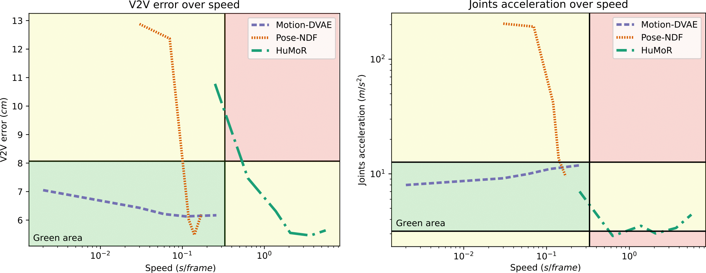

Pose and motion priors are crucial for recovering realistic and accurate human motion from noisy observations. Substantial progress has been made on pose and shape estimation from images, and recent works showed impressive results using priors to refine frame-wise predictions. However, a lot of motion priors only model transitions between consecutive poses and are used in time-consuming optimization procedures, which is problematic for many applications requiring real-time motion capture. We introduce Motion-DVAE, a motion prior to capture the short-term dependencies of human motion. As part of the dynamical variational autoencoder (DVAE) models family, Motion-DVAE combines the generative capability of VAE models and the temporal modeling of recurrent architectures. Together with Motion-DVAE, we introduce an unsupervised learned denoising method unifying regression- and optimization-based approaches in a single framework for real-time 3D human pose estimation. Experiments show that the proposed approach reaches competitive performance with state-of-the-art methods while being much faster.
|  |
We compare Motion-DVAE with state-of-the-art methods in terms of accuracy (V2V error) and plausibility (joints acceleration). Our method is much faster than others while showing comparable results at the end of optimization.
First, we visualise results for motion capture data denoising. Noisy observations are obtained by adding random noise in the pose parameter of sequences of the AMASS dataset. Motion-DVAE produces realistic motions, close to the groundtruth despite significant average noise in observations (12.89 cm). Optimization slightly improves the results compare to regression, particularly for arms motion and head orientation.
We also visualise predictions on the i3DB dataset. Even when projected in 2D, our predictions match visual cues, even if we do not have any reprojection loss. We can observe small breaks in Motion-DVAE's results. This is due to the concatenation of subsequences predicted independently.
Visualisations of this website are based on several works.
AMASS is a large database of human motion unifying different motion capture datasets in SMPL format. All motions for noisy motion capture denoising are generated from this database.
The i3DB dataset provides videos with rich 3D annotations on 3D pose and scene geometry. We use this dataset for motion estimation from RGB videos.
The code to generate visualisations is inspired from the code of HuMoR.
Comparison with state-of-the-art methods were done using the public implementations of VIBE, HuMoR and Pose-NDF
@inproceedings{Fiche23MotionDVAE,
author = {Fiche, Guénolé and Leglaive, Simon and Alameda-Pineda, Xavier and Séguier, Renaud},
title = {Motion-DVAE: Unsupervised learning for fast human motion denoising},
journal = {ACM SIGGRAPH Conference on Motion, Interaction and Games (MIG)},
year = {2023}
}